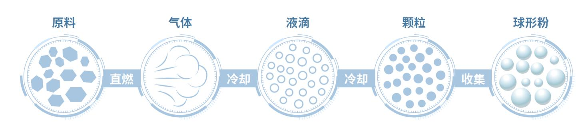
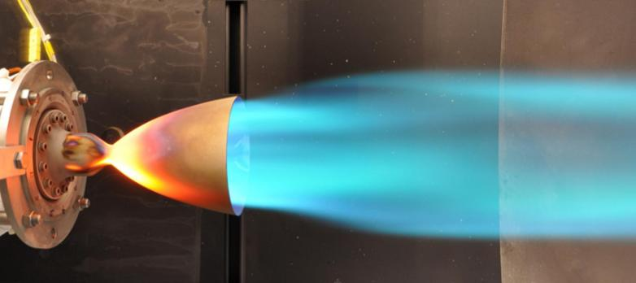

Raw Material
Qualified raw materials are selected and verified before production.
Technology
Self-developed production route is designed for spherical metal oxide powders with high purity, rapid reaction control, low energy use, narrow particle distribution, and flexible downstream surface treatment.
Qualified raw materials are selected and verified before production.
Direct combustion initiates a rapid reaction process.
Reaction and cooling conditions shape the forming particles.
Particles are controlled for morphology, distribution, and top cut.
Final collection yields spherical oxide powders for downstream grading and treatment.
The direct-combustion process converts verified raw material into gas, droplets, particles, and finally collected spherical powder through combustion and controlled cooling.

Raw material passes through combustion, cooling, particle formation, and collection to produce spherical powder.

The high-temperature flame demonstrates the rapid reaction environment used to form spherical oxide powder.
The process avoids introducing additional impurities, allowing product purity to be controlled through raw material purity and supporting 5N+ and low-alpha products.
No water use and reaction heat maintaining production without extra energy input.
Millisecond-level reaction speed supports rapid formation and process control.
Producing no three wastes and no carbon dioxide emissions during production.
| Material | D50 Capability | Top-Cut / Large Particle Control | Morphology |
|---|---|---|---|
| Spherical alumina | 0.1 to 10 microns controllable | Cut level down to 1 micron for selected products | 100% true spherical target |
| Spherical silica | 0.2 to 2 microns continuously controllable | D100 controlled by grade; large particles above 10 microns can be tightly limited | 100% true spherical target |

SRP positions customization as a key capability, including surface chemistry, cross-industry powder development, and fast technical response.
Amino, epoxy, acrylic, alkyl, and other surface treatment options are referenced in the product specification tables.
Dry, wet, and in-situ surface treatment methods can be described as selectable routes depending on material and customer formulation.
Customer requirements can receive customized product solutions within two weeks.